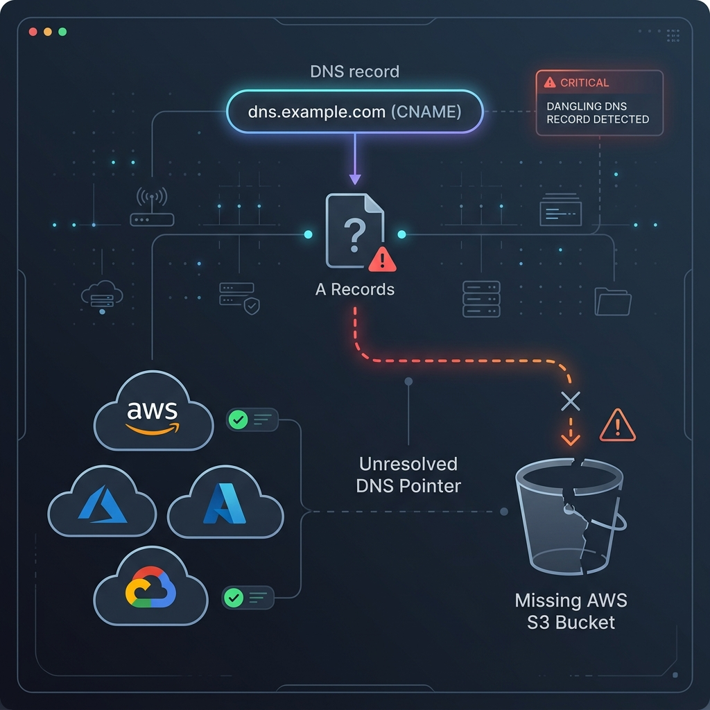

The Challenge of Multi-Cloud Kubernetes Operations
Managing Kubernetes clusters across AWS, GCP, and VMware environments creates operational fragmentation, inconsistent compliance auditing, and configuration drift. **Azure Arc-enabled Kubernetes** projects an ARM resource representation for any CNCF-compliant cluster, enabling centralized policy enforcement, Microsoft Sentinel telemetry ingestion, and Flux v2 GitOps deployment pipelines.
Architecture Overview: Azure Arc Control Plane

1. Arc Cluster Agents
Lightweight deployment components (ClusterConnect, Flux Operator, Guard) running inside target namespaces to establish secure outbound WebSocket connections to Azure.
2. Flux v2 GitOps Engine
Continuously reconciles cluster state against Git repositories (GitHub / Azure Repos), automatically applying Helm charts and Kustomize manifests.
3. Azure Policy for Kubernetes
Enforces Gatekeeper (OPA) policies at scale (e.g., blocking root containers, requiring resource limits, and restricting external load balancers).
4. Azure Monitor Container Insights
Collects Prometheus metrics, pod stdout/stderr logs, and cluster events into Log Analytics without local storage overhead.
Terraform Manifest: Connecting AWS EKS to Azure Arc
Below is a Terraform configuration snippet using the `azurerm` provider to onboard an external Kubernetes cluster into Azure Arc:
resource "azurerm_arc_kubernetes_cluster" "eks_cluster" {
name = "production-aws-eks-us-east-1"
resource_group_name = "rg-arc-governance-prod"
location = "eastus"
agent_public_key_base64 = var.arc_agent_public_key
identity {
type = "SystemAssigned"
}
tags = {
Environment = "Production"
Cloud = "AWS"
Platform = "EKS"
}
}
# Deploy Flux GitOps Extension
resource "azurerm_kubernetes_cluster_extension" "flux_extension" {
name = "fluxv2"
cluster_id = azurerm_arc_kubernetes_cluster.eks_cluster.id
extension_type = "microsoft.flux"
}